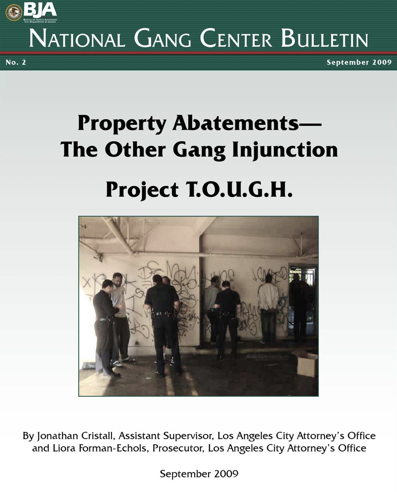

One of the many new LLC entities that emerged during the Great Recession is Haroni Investments LLC, owned by Adir Haroni and Amir Ohebsion. Formed in February 2011, Haroni Investments LLC is one of many investors driving the forces of gentrification in South Central, capitalizing on banishment of Black and brown people from our communities. Haroni Investments has been developing several new apartment buildings in South Central LA near the newly under construction SoFi stadium as well as around the new Crenshaw line – two mega-projects driving displacement in South Central Los Angeles.
The power of racial banishment these landlords exercise includes direct lines of communication with the City Attorney’s office to request intervention from LAPD. Email communications that we obtained through Public Records Act requests suggest a close level of familiarity and collaboration between Haroni’s owner Amir Ohebsian and law enforcement officials. In the emails, which are from late 2018, a city prosecutor wrote to LAPD saying he “is working on a property in 77th Division and the owner emailed me about trouble he is having at a different property in Rampart.” An LAPD officer promptly responded, “give me the details of the issue so that I can and [sic] put them in our database.” The prosecutor then shared Ohebsian’s email and the building address and said, “I will give the owner your contact information and ask him to reach out to you.”
The owner referenced here is Amir Ohebsian from Haroni investments. And the prosecutor was a Deputy City Attorney with the Citywide Nuisance Abatement Program (CNAP), a law enforcement initiative where multiple city agencies collaborate to coerce landlords into evicting tenants who the state wants removed. Research into every CNAP case filed by the City Attorney between 2013 and 2018 – some of the prime years of real estate speculation following the Great Recession – show that the program “mostly target housing, be it single-family dwellings or multi-family rental buildings, and residential hotels and motels” and a “large number of these properties are located in South Central Los Angeles, specifically in census tracts where Black residents make up 30% or more of the population.”
What is a “nuisance abatement” and how is LAPD involved?
The city claims that the purpose of Citywide Nuisance Abatement Program (CNAP) is to target “the worst abandoned structures and nuisance properties plaguing Los Angeles neighborhoods.” But as the interaction between these CNAP prosecutors and real estate investors reveal, this program is another instrument through which policing clears land and destroys communities to make way for gentrification. The City Attorney accomplishes this harm through the mechanisms of both property law and criminal law, which have long been combined as instruments of racial conquest, segregation, and domination. CNAP’s targeting of particular locations is also substantiated using predictive policing and community policing programs, both of which make it easy for real estate owners to work with the police to make communities unlivable and eventually clear the way for gentrification.
The City Attorney’s Office, which introduced Haroni owner Amir Ohebsion to LAPD and its database, has also been linked to predictive policing from early on. For example, in May 2016 a Neighborhood Prosecutor for the Harbor Division wrote to Craig Uchida, the consultant hired by LAPD to build and evaluate the Operation LASER predictive policing program that she wanted LASER data “for the last 10 years as well as for 2015.” She explained that she was “working with LAPD to assist in any way we can with enforcement of the LASER zones” and “looking for stats on how the three LASER zones were identified for the Harbor Division of LAPD.” Uchida then supplies information on the LASER “hotspot” policing zones LAPD identified in the area. He also asks her to “not distribute the data,” explaining that the zones “are unvalidated because we haven't vetted them with Harbor Division personnel.” The Neighborhood Prosecutor replies that this unvalidated data “will be very helpful since I have been meeting with the three senior lead officers to formulate strategies regarding our enforcement efforts in their respective areas.” About Uchida’s warnings to not share the data, she adds: “It will only be used to strategize and will not be distributed.”
A month after that exchange, an LAPD Harbor Area officer emailed the City Attorney’s office to announce: “The laser project has been initiated. When we receive an arrest in the laser zones the report will have a red L in the top right corner as requested.” The strategy appears to be in motion: Operation LASER program begins working through nuisance abatements and evictions in areas defined as Anchor Points – crime attractors or crime generators. These Anchor Points were a key component of LAPD’s interventions within LASER Zones.
CNAP prosecutors also appear to coordinate with local and federal law enforcement through “fusion centers,” which are local garrisons of information-sharing and data-mining. These spy centers began spreading in the post-9/11 transformation of local policing into programs of mass suspicion, data-gathering, and surveillance. Our 2013 People’s Audit of LAPD Special Order 1 documents the operation and harm of federal fusion centers. The federal fusion center for the Los Angeles region is named Joint Regional Intelligence Center (JRIC) and located on Imperial Highway – a fitting name – in Norwalk. An email from Jonathan Cristall, Supervising Assistant City Attorney for CNAP, addressed “Hey Team” in February 2018 announces “we’ll be getting a tour” of the JRIC with an LAPD officer. Cristall’s email is to an email list named “ATT TOUGH,” referring to T.O.U.G.H (Taking Out Urban Gang Headquarters). This is a project that Cristall supervises and wrote about in a 2009 report from the federal Bureau of Justice Assistance about how city prosecutors can apply property law to pressure buildings to target unwanted people for landlords to evict. The report notes that “attorneys assigned to T.O.U.G.H. are criminal prosecutors” and in the next sentence boasts that one of “several benefits to this” approach is that “the defendants do not have a right to a jury trial or a court-appointed attorney.”

One of the T.O.U.G.H. prosecutors who Cristal emails about the JRIC spy center tour is Drew Robertson, a Deputy City Attorney. Legal documents reported by journalist Adrian Riskin shows coordination between Robertson and real estate developer Shaul Kuba to use a CNAP lawsuit to coerce Abdul Sherif, the owner of a liquor store in rapidly gentrifying West Adams, to sell Kuba his business. Kuba is co-founder and principal of CIM Group, which in 2018 was developing at least six sites within a few blocks of the targeted store. Riskin notes that cases like this help advance the broader ambitions of City Attorney Michael Feuer, whose office CNAP is housed in: “Gentrification funnels money to real estate developers who turn around and show their pleasure by sending a small percentage back to elected officials. Mike Feuer needs this kind of support for his 2022 mayoral campaign, so nuisance suits like this are to be expected.”
Sheriff’s case also shows how CNAP is used to compel private-public “partnership” on LAPD surveillance. Depositions from the case also show that the case was used to pressure the owner to install street-facing surveillance cameras that an undercover officer confirmed LAPD has access to. The undercover officer – who was assigned to the West Adams area – also confirmed that this LAPD access to private cameras was “in keeping with [his] recommendation in other situations.” Along the same lines, the CNAP complaint filed against the owner of the Chesapeake Apartments, a 425-unit complex in Baldwin Hills, asked the judge to order “the establishment of extensive security systems at the property with direct access by the Los Angeles Police Department to these systems of monitoring and surveillance.” These CNAP-compelled surveillance systems expand LAPD’s vast architecture of surveillance, which includes fusion centers, facial recognition, and other data-mining initiatives.
We are eager to keep learning more about the exact forms of collaboration between CNAP prosecutors and LAPD, as well as between law enforcement officials and landlords like Haroni and CIM.